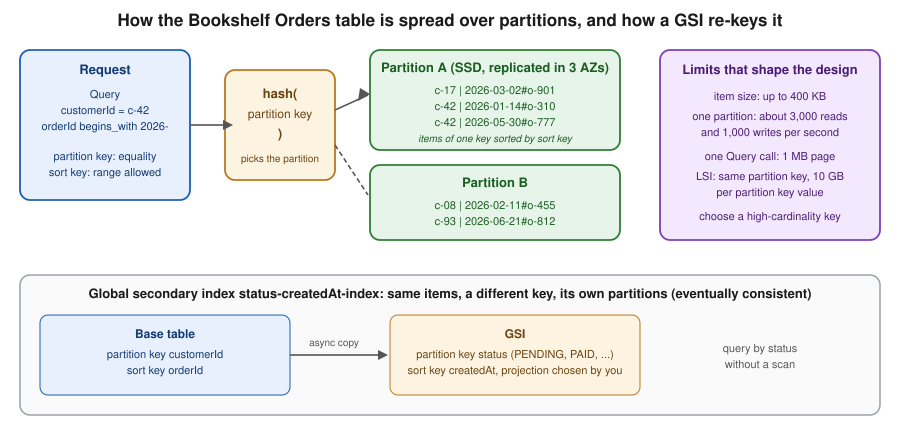

Amazon DynamoDB
|
This content was generated with the assistance of AI and should be verified against the official documentation before being relied on in production. |
Commands and behaviour below are current for AWS CLI v2 (2.37 line), the AWS SDK for Java 2.x (Enhanced Client) and Spring
Cloud AWS 4.x (Spring Boot 4) or 3.4.x (Spring Boot 3.5), checked 2026-10-01 against the DynamoDB Developer Guide. DynamoDB
added several features in 2024 to 2026 (lower on-demand prices, warm throughput, multi-Region strong consistency,
multi-account global tables, vector search), so confirm flags with aws dynamodb help and the linked reference pages
before relying on them in automation. Region us-east-1 is a placeholder throughout.
Amazon DynamoDB is AWS’s serverless key-value and document database: you create a table, choose a key, and AWS handles
servers, partitioning, replication across three Availability Zones, patching and scaling. There is no instance to size,
no connection pool to tune and no maintenance window; you pay for the reads, writes and storage you use. In Bookshelf it
holds the Orders table owned by orders-api: orders are always read by customer or by order ID, written at unpredictable
rates, and never joined, which is exactly the access pattern DynamoDB is built for. The relational catalog lives in Aurora
(see Amazon Aurora and Amazon RDS); the map of every AWS database option is in
Managed Databases on AWS. For the engine-neutral view of when a key-value store fits at all, read
Choosing the Right Database; the Azure counterpart is Cosmos DB and Azure DocumentDB.

Data model
A table is a collection of items (rows). An item is a set of attributes (name and typed value) with no fixed schema
beyond the key: two items in Orders can carry different attributes. Types are scalars (S string, N number, B
binary, BOOL, NULL), sets (SS, NS, BS) and documents (L list, M map). An item, including attribute names, is
limited to 400 KB, so large payloads such as PDFs belong in S3 (see S3 Object Storage) with the key
stored in the item.
Primary key
Every table needs a primary key, chosen at creation and immutable afterwards:
-
Simple key: a partition key only. DynamoDB hashes it to choose the partition that stores the item; you can fetch an item by exact key and nothing else cheaply.
-
Composite key: a partition key plus a sort key. All items sharing a partition key are stored together, ordered by sort key, so you can
Querythem by equality on the partition key and a range (=,<,between,begins_with) on the sort key.
Orders uses customerId (partition key) and orderId (sort key). Make orderId start with a sortable timestamp or a
ULID (2026-05-30T10:15:00Z#o-777) and "the latest orders of this customer" becomes a single cheap query with
ScanIndexForward=false. A good partition key has many distinct values and spreads traffic evenly: a single partition
serves roughly 3,000 read and 1,000 write units per second, so a key such as status or a date would create a hot
partition. DynamoDB adapts by splitting partitions for heavy keys, but it cannot split one key value across partitions.
Secondary indexes
Queries that do not start from the primary key need an index; the alternative is a Scan, which reads (and bills) the
whole table.
| Global secondary index (GSI) | Local secondary index (LSI) | |
|---|---|---|
Key |
Any partition key and optional sort key, on any attributes. |
Same partition key as the table, a different sort key. |
When to create |
Any time, including on an existing table. |
Only at table creation. |
Consistency |
Eventually consistent reads only; writes to the base table propagate asynchronously. |
Eventually or strongly consistent reads. |
Capacity |
Own read and write capacity (provisioned) or own on-demand throughput; a throttled GSI can throttle base-table writes. |
Shares the base table’s capacity. |
Limits |
20 per table by default (adjustable). |
5 per table; imposes a 10 GB limit per partition key value (the item collection); not supported on multi-Region strongly consistent global tables. |
Typical use |
"Orders by status and creation time" for an operations dashboard. |
"A customer’s orders by total amount" next to the by-date order. |
Each index has a projection: KEYS_ONLY, INCLUDE (named attributes) or ALL. Project only what the query needs;
every projected attribute costs storage and write capacity on each update. Up to 100 attributes can be projected across the
INCLUDE projections of a table.
Derived from the Developer Guide — Core components, Global secondary indexes, Local secondary indexes and Service quotas.
Single-table design, briefly
Relational habit says one table per entity. DynamoDB has no joins, so single-table design stores several entity types in
one table and uses generic key names (pk, sk) with prefixes so that one Query returns everything an access pattern
needs in one round trip. For Bookshelf that could be:
| pk | sk | Item |
|---|---|---|
|
|
Customer profile attributes. |
|
|
An order header. |
|
|
One order line. |
Query pk = CUSTOMER#c-42 AND begins_with(sk, "ORDER#2026-05") returns a customer’s May orders with their lines. The
trade-off is real: items are harder to read in the console, schema changes are manual migrations, and analytics tools see an
opaque table. Design from the access patterns (list them first, with their frequency), not from the entities, and prefer
the simpler one-entity-per-table layout, as this page does for Orders, unless a read genuinely needs several entity types
together. Older guides present single-table design as mandatory; current AWS guidance treats it as a technique to use when it
removes round trips.
Derived from the Developer Guide — Data modeling for DynamoDB and NoSQL design best practices.
Reading and writing
DynamoDB is accessed through an HTTPS API (GetItem, PutItem, UpdateItem, DeleteItem, Query, Scan,
BatchGetItem, BatchWriteItem, TransactGetItems, TransactWriteItems, ExecuteStatement); the SDKs and the CLI sign
every call with SigV4, so no connection or driver is involved.
-
Consistency: reads are eventually consistent by default (about half the cost) and strongly consistent with
ConsistentRead=trueonGetItem,Queryon a table or LSI, andScan. GSI reads are always eventually consistent. -
Query vs. Scan:
Querytouches one partition key value and is cheap;Scanreads every item and a 1 MB page at a time. Reserve scans for small tables, exports and one-off jobs. Both return at most 1 MB per call and aLastEvaluatedKeyyou pass back asExclusiveStartKey(the CLI and SDK paginators do this for you). -
Batches:
BatchGetItemup to 100 items,BatchWriteItemup to 25 puts or deletes; they are not atomic and can returnUnprocessedItemsthat you must retry. -
Expressions:
--key-condition-expression,--filter-expression(applied after the read, so the read is still billed),--projection-expression,--update-expressionand--condition-expression, with#nameplaceholders for attribute names and:valueplaceholders for values.
Condition expressions and optimistic locking
A condition expression makes a write succeed only if the stored item matches; otherwise the call fails with
ConditionalCheckFailedException and nothing changes. Two idioms cover most needs: attribute_not_exists(orderId) for
"insert only, never overwrite", and a version attribute for optimistic locking: read the item with its version, write
back with version = :expected and increment it in the same update. The Enhanced Client automates this (below).
PartiQL
DynamoDB also accepts a SQL-compatible dialect, PartiQL, through ExecuteStatement and BatchExecuteStatement:
SELECT * FROM Orders WHERE customerId = 'c-42'. It is syntax sugar over the same operations: a WHERE that does not
include the partition key becomes a scan, so treat it as a convenience for the console’s query editor and ad hoc work
rather than as a relational layer.
Transactions
TransactWriteItems applies up to 100 puts, updates, deletes and condition checks across one or more tables in the same
Region as a single all-or-nothing operation (4 MB total), and TransactGetItems reads up to 100 items in a consistent
snapshot. Transactional reads and writes cost twice the normal capacity. Pass a ClientRequestToken to make a retried
transaction idempotent for ten minutes. In Bookshelf, placing an order writes the order and adds a counter on the customer
atomically. Transactions are not supported on multi-Region strongly consistent global tables, and on eventually consistent
global tables they are atomic only in the Region where they ran.
Derived from the Developer Guide — Transactions, Condition expressions and PartiQL for DynamoDB.
Capacity modes
DynamoDB meters throughput in request units. One read unit is one strongly consistent read of an item up to 4 KB (two eventually consistent reads, or half a transactional read); one write unit is one write of an item up to 1 KB (a transactional write costs two). Larger items consume more units, rounded up.
| On-demand | Provisioned | |
|---|---|---|
You pay for |
Each read and write request actually made. |
Capacity you reserve per second (RCU and WCU), used or not. |
Scaling |
Automatic; a new table instantly serves a baseline and then follows traffic, doubling over the previous peak without throttling in practice. |
You set it, or Application Auto Scaling follows a utilisation target; scaling is not instant, so sharp spikes can throttle. |
Best for |
New, spiky or unpredictable workloads: the recommended default. |
Steady, well-understood load, where reserved capacity can lower the bill further. |
Safety valve |
Optional table-level maximum read and write units ( |
The scaling policy’s minimum and maximum, and the account and table quotas. |
On-demand prices were cut by about half in November 2024, so older cost comparisons that favour provisioned capacity for
anything but flat, predictable load are out of date; re-run the comparison with the current pricing page. You can switch a
table between modes (limited to once per 24 hours when going back and forth), and table classes (STANDARD and
STANDARD_INFREQUENT_ACCESS) trade cheaper storage for dearer requests on tables that are mostly cold.
Default quotas per Region: 40,000 read and 40,000 write units per second per table (on-demand and provisioned), 80,000 of each per account for provisioned tables, 2,500 tables per account, and 20 GSIs per table; all are adjustable through Service Quotas. Provisioned tables can be decreased only a limited number of times per day.
Warm throughput is the number of reads and writes per second a table or index can serve instantly. A new on-demand table
starts at a low baseline; if a launch or migration will exceed it, pre-warm the table with --warm-throughput so the first
burst is not throttled. It is free to inspect and billed only when you raise it above the default.
Provisioned capacity with auto scaling
Provisioned tables scale through Application Auto Scaling, which the console configures when you leave Auto scaling on. By CLI you register the table (and each GSI) as a scalable target, then attach a target-tracking policy.
aws application-autoscaling register-scalable-target \
--service-namespace dynamodb \
--resource-id table/Orders \
--scalable-dimension dynamodb:table:WriteCapacityUnits \
--min-capacity 5 --max-capacity 500
aws application-autoscaling put-scaling-policy \
--service-namespace dynamodb \
--resource-id table/Orders \
--scalable-dimension dynamodb:table:WriteCapacityUnits \
--policy-name orders-write-target-tracking \
--policy-type TargetTrackingScaling \
--target-tracking-scaling-policy-configuration '{
"TargetValue": 70.0,
"PredefinedMetricSpecification": {"PredefinedMetricType": "DynamoDBWriteCapacityUtilization"},
"ScaleInCooldown": 300, "ScaleOutCooldown": 60 }'Repeat with dynamodb:table:ReadCapacityUnits / DynamoDBReadCapacityUtilization and, for each GSI,
--resource-id table/Orders/index/status-createdAt-index with the dynamodb:index:* dimensions. Auto scaling reacts in
minutes and cannot absorb a sudden tenfold spike; that is the case for on-demand mode.
Creating the Orders table
In the AWS Management Console
-
Choose the Region in the navigation bar (here
us-east-1) and open DynamoDB. -
Choose Create table.
-
Enter Table name
Orders, Partition keycustomerId(String) and Sort keyorderId(String). -
Under Table settings choose Customize settings. For Read/write capacity settings choose On-demand. Keep Encryption at rest on Owned by Amazon DynamoDB unless you must control the key (then choose AWS managed key or Customer managed key; see Secrets Manager, Parameter Store and KMS). Tick Deletion protection.
-
Under Secondary indexes choose Create global index: Partition key
status(String), Sort keycreatedAt(String), Index namestatus-createdAt-index, Attribute projections Include withtotalandcustomerId. -
Choose Create table. When the status is Active, open the table, choose Explore table items and Create item to add a sample order (the console offers a JSON view). The PartiQL editor in the left navigation runs the PartiQL queries from above.
-
To run the CLI steps without installing anything, open AWS CloudShell from the toolbar.
With the AWS CLI
export AWS_REGION=us-east-1
export ACCOUNT_ID=$(aws sts get-caller-identity --query Account --output text)
aws dynamodb create-table \
--table-name Orders \
--attribute-definitions \
AttributeName=customerId,AttributeType=S \
AttributeName=orderId,AttributeType=S \
AttributeName=status,AttributeType=S \
AttributeName=createdAt,AttributeType=S \
--key-schema \
AttributeName=customerId,KeyType=HASH \
AttributeName=orderId,KeyType=RANGE \
--global-secondary-indexes '[{
"IndexName": "status-createdAt-index",
"KeySchema": [
{"AttributeName": "status", "KeyType": "HASH"},
{"AttributeName": "createdAt", "KeyType": "RANGE"}],
"Projection": {"ProjectionType": "INCLUDE", "NonKeyAttributes": ["total", "customerId"]}
}]' \
--billing-mode PAY_PER_REQUEST \
--deletion-protection-enabled \
--tags Key=app,Value=bookshelf
aws dynamodb wait table-exists --table-name Orders
aws dynamodb describe-table --table-name Orders \
--query 'Table.[TableStatus,BillingModeSummary.BillingMode,TableArn]' --output textDerived from aws dynamodb create-table and
Getting started — Create a table.
Only attributes used in a key or index are declared in --attribute-definitions; every other attribute is schemaless. For a
provisioned table replace --billing-mode PAY_PER_REQUEST with --billing-mode PROVISIONED --provisioned-throughput
ReadCapacityUnits=5,WriteCapacityUnits=5 (and add a ProvisionedThroughput block to each GSI). Table names are scoped to
the account and Region, 3 to 255 characters.
Working with items from the CLI
The low-level CLI uses DynamoDB JSON, where every value carries its type (S for string, N for number). The aws dynamodb commands
return the same format; use --query to reshape it, or the SDKs, which convert for you.
# Insert only: fail rather than overwrite an existing order
aws dynamodb put-item --table-name Orders \
--item '{
"customerId": {"S": "c-42"},
"orderId": {"S": "2026-05-30T10:15:00Z#o-777"},
"status": {"S": "PENDING"},
"createdAt": {"S": "2026-05-30T10:15:00Z"},
"total": {"N": "59.80"},
"version": {"N": "0"}
}' \
--condition-expression 'attribute_not_exists(orderId)'
# Point read, strongly consistent
aws dynamodb get-item --table-name Orders --consistent-read \
--key '{"customerId": {"S": "c-42"}, "orderId": {"S": "2026-05-30T10:15:00Z#o-777"}}'
# Query: a customer's May 2026 orders, newest first
aws dynamodb query --table-name Orders \
--key-condition-expression 'customerId = :c AND begins_with(orderId, :p)' \
--expression-attribute-values '{":c": {"S": "c-42"}, ":p": {"S": "2026-05"}}' \
--no-scan-index-forward \
--query 'Items[].[orderId.S,status.S,total.N]' --output table
# Query the GSI: everything still pending
aws dynamodb query --table-name Orders --index-name status-createdAt-index \
--key-condition-expression '#s = :s' \
--expression-attribute-names '{"#s": "status"}' \
--expression-attribute-values '{":s": {"S": "PENDING"}}'
# Optimistic locking: mark paid only if nobody else changed the item
aws dynamodb update-item --table-name Orders \
--key '{"customerId": {"S": "c-42"}, "orderId": {"S": "2026-05-30T10:15:00Z#o-777"}}' \
--update-expression 'SET #s = :paid, version = version + :one' \
--condition-expression 'version = :expected' \
--expression-attribute-names '{"#s": "status"}' \
--expression-attribute-values '{":paid": {"S": "PAID"}, ":one": {"N": "1"}, ":expected": {"N": "0"}}' \
--return-values ALL_NEW
# PartiQL
aws dynamodb execute-statement \
--statement "SELECT orderId, status FROM Orders WHERE customerId = 'c-42'"
# Delete, only if still pending
aws dynamodb delete-item --table-name Orders \
--key '{"customerId": {"S": "c-42"}, "orderId": {"S": "2026-05-30T10:15:00Z#o-777"}}' \
--condition-expression '#s = :p' \
--expression-attribute-names '{"#s": "status"}' \
--expression-attribute-values '{":p": {"S": "PENDING"}}'Derived from aws dynamodb put-item,
query,
update-item and
execute-statement. status is a reserved
word in DynamoDB expressions, which is why it is aliased as #s. A transactional write that places the order and bumps
the customer’s counter looks like this (put it in tx.json):
[
{"Put": {
"TableName": "Orders",
"Item": {"customerId": {"S": "c-42"}, "orderId": {"S": "2026-05-30T10:20:00Z#o-778"},
"status": {"S": "PENDING"}, "createdAt": {"S": "2026-05-30T10:20:00Z"}, "version": {"N": "0"}},
"ConditionExpression": "attribute_not_exists(orderId)"}},
{"Update": {
"TableName": "Orders",
"Key": {"customerId": {"S": "c-42"}, "orderId": {"S": "PROFILE"}},
"UpdateExpression": "ADD orderCount :one",
"ExpressionAttributeValues": {":one": {"N": "1"}}}}
]aws dynamodb transact-write-items --transact-items file://tx.json \
--client-request-token order-o-778Derived from aws dynamodb
transact-write-items. If a condition fails the call raises TransactionCanceledException with one cancellation reason per
item and nothing is written.
Application code in Java
The AWS SDK for Java 2.x has a low-level DynamoDbClient and a DynamoDB Enhanced Client that maps annotated beans to items,
builds expressions and handles pagination. Credentials come from the default chain: the ECS task role of orders-api (see
ECS and Fargate), an EKS Pod Identity role or a Lambda execution role, never an access key.
Add software.amazon.awssdk:dynamodb-enhanced (the BOM software.amazon.awssdk:bom manages the version).
package com.example.bookshelf.orders;
import software.amazon.awssdk.enhanced.dynamodb.mapper.annotations.*;
import java.math.BigDecimal;
@DynamoDbBean
public class Order {
private String customerId;
private String orderId;
private String status;
private String createdAt;
private BigDecimal total;
private Long version;
@DynamoDbPartitionKey
public String getCustomerId() { return customerId; }
public void setCustomerId(String customerId) { this.customerId = customerId; }
@DynamoDbSortKey
public String getOrderId() { return orderId; }
public void setOrderId(String orderId) { this.orderId = orderId; }
@DynamoDbSecondaryPartitionKey(indexNames = "status-createdAt-index")
public String getStatus() { return status; }
public void setStatus(String status) { this.status = status; }
@DynamoDbSecondarySortKey(indexNames = "status-createdAt-index")
public String getCreatedAt() { return createdAt; }
public void setCreatedAt(String createdAt) { this.createdAt = createdAt; }
public BigDecimal getTotal() { return total; }
public void setTotal(BigDecimal total) { this.total = total; }
@DynamoDbVersionAttribute // optimistic locking: the client adds the condition and increments it
public Long getVersion() { return version; }
public void setVersion(Long version) { this.version = version; }
}package com.example.bookshelf.orders;
import software.amazon.awssdk.enhanced.dynamodb.*;
import software.amazon.awssdk.enhanced.dynamodb.model.*;
import software.amazon.awssdk.services.dynamodb.DynamoDbClient;
import java.util.List;
public class OrderRepository {
private final DynamoDbTable<Order> orders;
private final DynamoDbIndex<Order> byStatus;
public OrderRepository(DynamoDbClient client) { // Region and credentials from the default chain
DynamoDbEnhancedClient enhanced = DynamoDbEnhancedClient.builder().dynamoDbClient(client).build();
this.orders = enhanced.table("Orders", TableSchema.fromBean(Order.class));
this.byStatus = orders.index("status-createdAt-index");
}
public void place(Order order) {
// insert only, never overwrite an existing order
orders.putItem(PutItemEnhancedRequest.builder(Order.class)
.item(order)
.conditionExpression(Expression.builder().expression("attribute_not_exists(orderId)").build())
.build());
}
public List<Order> latestFor(String customerId, int limit) {
return orders.query(QueryEnhancedRequest.builder()
.queryConditional(QueryConditional.keyEqualTo(Key.builder().partitionValue(customerId).build()))
.scanIndexForward(false)
.limit(limit)
.build())
.items().stream().limit(limit).toList();
}
public Order markPaid(Order order) {
order.setStatus("PAID");
return orders.updateItem(order); // fails with ConditionalCheckFailedException if the version moved
}
}Derived from the AWS SDK for
Java 2.x — DynamoDB Enhanced Client guide. Build the DynamoDbClient once and reuse it (it is thread-safe and pools HTTP
connections). With Spring Boot, the Spring Cloud AWS starter io.awspring.cloud:spring-cloud-aws-starter-dynamodb
auto-configures the client and a DynamoDbTemplate with save, load, query and delete over the same annotated beans,
reading spring.cloud.aws.region.static and the default credential chain; see the
Spring Cloud AWS — DynamoDB integration. For the Spring Data view of other stores, see Spring Data Overview.
Local development with DynamoDB Local
DynamoDB Local is an official downloadable emulator of the API, available as a JAR or a container image. It stores data in memory or a file and ignores credentials, so it suits unit tests and offline work, but it does not model throughput limits, throttling, Streams delivery to Lambda or global tables, so confirm those on a real table.
docker run --rm -p 8000:8000 amazon/dynamodb-local:latest -jar DynamoDBLocal.jar -inMemory
aws dynamodb list-tables --endpoint-url http://localhost:8000 --region us-east-1In Java call DynamoDbClient.builder().endpointOverride(URI.create("http://localhost:8000")) with a dummy static credentials
provider and any Region; Spring Cloud AWS exposes the same switch as spring.cloud.aws.dynamodb.endpoint.
Derived from Developer Guide — Setting up DynamoDB local.
Time to Live
TTL deletes expired items for free: you name a numeric attribute holding a Unix epoch time in seconds, and a background process removes items whose time has passed. Bookshelf uses it to drop abandoned carts after 30 days.
In the AWS Management Console
-
Open the table, choose the Additional settings tab and, under Time to Live (TTL), choose Turn on.
-
Enter TTL attribute name
expiresAtand choose Turn on TTL. Use Run preview to see which items would be deleted.
With the AWS CLI
aws dynamodb update-time-to-live --table-name Orders \
--time-to-live-specification 'Enabled=true,AttributeName=expiresAt'
aws dynamodb describe-time-to-live --table-name OrdersDerived from aws dynamodb
update-time-to-live. Deletion is not instant: expired items typically disappear within a few days and can still be returned
by reads until then, so queries that must not see them add a filter on expiresAt. TTL deletes appear in Streams (marked as
service deletions) and do not consume write capacity. TTL is not supported on multi-Region strongly consistent global tables.
Streams and event-driven processing
DynamoDB Streams records every item-level change (insert, modify, remove) in order per item, and keeps the records for 24
hours. You choose what each record carries: KEYS_ONLY, NEW_IMAGE, OLD_IMAGE or NEW_AND_OLD_IMAGES. Lambda is the usual
consumer through an event source mapping that polls the stream shards, batches records and retries; Bookshelf uses it to
send a confirmation e-mail through the notifier worker when an order becomes PAID. Reading a stream from Lambda is not
billed as a stream read request. The alternative, Kinesis Data Streams for DynamoDB, keeps records up to a year and fans
out to more consumers, at an extra charge. Lambda event source mappings are covered in
Lambda: Event-Driven and Serverless Apps.
In the AWS Management Console
-
Open the table, choose the Exports and streams tab and, under DynamoDB stream details, choose Turn on.
-
Choose New image and Turn on stream.
-
Open the Lambda console, choose the
notifierfunction, then Add trigger, select DynamoDB and theOrderstable. -
Set Batch size, Starting position Latest, tick Report batch item failures, add an On-failure destination (an SQS queue) and, under Filter criteria, paste the event pattern below. Choose Add.
With the AWS CLI
aws dynamodb update-table --table-name Orders \
--stream-specification StreamEnabled=true,StreamViewType=NEW_AND_OLD_IMAGES
STREAM_ARN=$(aws dynamodb describe-table --table-name Orders \
--query 'Table.LatestStreamArn' --output text)
aws lambda create-event-source-mapping \
--function-name notifier \
--event-source-arn $STREAM_ARN \
--starting-position LATEST \
--batch-size 100 \
--maximum-batching-window-in-seconds 5 \
--bisect-batch-on-function-error \
--function-response-types ReportBatchItemFailures \
--maximum-retry-attempts 5 \
--destination-config '{"OnFailure": {"Destination": "arn:aws:sqs:us-east-1:111122223333:orders-stream-failures"}}' \
--filter-criteria '{"Filters": [{"Pattern": "{\"eventName\": [\"MODIFY\"], \"dynamodb\": {\"NewImage\": {\"status\": {\"S\": [\"PAID\"]}}}}"}]}'Derived from aws lambda
create-event-source-mapping and
Developer Guide — DynamoDB Streams and
AWS Lambda triggers. The function’s execution role needs dynamodb:DescribeStream, dynamodb:GetRecords,
dynamodb:GetShardIterator and dynamodb:ListStreams on the stream ARN (the managed policy
AWSLambdaDynamoDBExecutionRole has them) plus sqs:SendMessage on the failure queue. Make the handler idempotent: records
can be delivered more than once. The account ID above is a placeholder.
Backups, restore and export
DynamoDB offers three complementary protections.
| Feature | What it gives you |
|---|---|
Point-in-time recovery (PITR) |
Continuous backups: restore the table to any second within a recovery period of 1 to 35 days you choose (the latest restorable time is typically about five minutes ago). A restore always creates a new table. Off by default. |
On-demand backups |
Full snapshots you create (or schedule through AWS Backup) with no impact on performance, kept until you delete them. AWS Backup adds cross-Region and cross-account copies, vaults with retention rules and centralised reporting. |
Export to and import from S3 |
Export a full table or an incremental window to S3 as DynamoDB JSON or Amazon Ion from the PITR data, without using table capacity, for analytics in Athena or audits. Import loads CSV, DynamoDB JSON or Ion from S3 into a new table. |
Restores do not copy everything: TTL settings, Streams, autoscaling policies, alarms, tags and PITR itself must be re-applied, while GSIs and LSIs can be included or omitted. When you delete a table that has PITR on, DynamoDB keeps a system backup for 35 days, so an accidental delete is recoverable.
In the AWS Management Console
-
Open the table and choose the Backups tab.
-
Under Point-in-time recovery (PITR) choose Edit, select Turn on point-in-time recovery, set the Recovery period (1 to 35 days) and choose Save changes.
-
To restore, choose Restore to point in time, pick Latest restorable time or a Custom date and time, name the new table (for example
Orders-restored), choose the settings to copy and choose Restore. -
For snapshots choose Create backup (or Schedule backups with AWS Backup). Use Exports to S3 in the left navigation for exports and imports.
With the AWS CLI
aws dynamodb update-continuous-backups --table-name Orders \
--point-in-time-recovery-specification PointInTimeRecoveryEnabled=true,RecoveryPeriodInDays=35
aws dynamodb restore-table-to-point-in-time \
--source-table-name Orders --target-table-name Orders-restored \
--restore-date-time 2026-05-30T10:00:00Z # or --use-latest-restorable-time
aws dynamodb create-backup --table-name Orders --backup-name orders-before-migration
aws dynamodb restore-table-from-backup \
--target-table-name Orders-restored \
--backup-arn $(aws dynamodb list-backups --table-name Orders \
--query 'BackupSummaries[-1].BackupArn' --output text)
# Export to S3 (needs PITR on); the bucket is the uploads bucket from the S3 page
TABLE_ARN=$(aws dynamodb describe-table --table-name Orders --query Table.TableArn --output text)
aws dynamodb export-table-to-point-in-time \
--table-arn $TABLE_ARN --s3-bucket $BUCKET --s3-prefix exports/orders/ \
--export-format DYNAMODB_JSONDerived from Developer
Guide — Enable point-in-time recovery, Backup
and restore and Export to Amazon
S3. Loading a CSV from S3 into DynamoDB with aws dynamodb import-table (or with a Lambda function triggered by an S3 event)
is the modern replacement for hand-written import scripts; see S3 Object Storage for the bucket side.
Global tables
Global tables replicate a table across AWS Regions with active-active writes: each Region has a replica you read and write locally, with a 99.999 percent availability SLA, compared with 99.99 percent for a single-Region table. Replication consumes write capacity on every replica, and all replicas share one name, key schema and data. There are two consistency modes, fixed at creation:
| Multi-Region eventual consistency (MREC) | Multi-Region strong consistency (MRSC) | |
|---|---|---|
Replication |
Asynchronous, usually under a second; conflicts resolved last-writer-wins. |
Synchronous to at least one other Region before a write returns; strongly consistent reads see the latest write anywhere. |
Regions |
As many as the partition has Regions; add or remove replicas at any time. |
Exactly three: three replicas, or two replicas and a witness; chosen at creation; in supported Regions only. |
Recovery point |
Replication delay (a few seconds). |
Zero. |
Not supported |
Nothing notable; transactions are atomic only in the originating Region. |
TTL, LSIs and transactions; the table must be empty when converted. |
Latency |
Local reads and writes. |
Higher writes and strongly consistent reads, depending on the Regions chosen. |
Multi-account global tables, announced in 2026, let replicas live in different AWS accounts, which suits cross-account disaster recovery. Settings such as capacity mode, GSIs, TTL and encryption type are synchronised across replicas, while PITR, deletion protection, tags and resource policies are not, so enable them on each replica. Writes to a replica bypass DAX.
In the AWS Management Console
-
Open the table, choose the Global tables tab and choose Create replica.
-
Choose the Replication region (for example
eu-west-1), keep or adjust settings, and choose Create replica. Replicas show Creating and then Active; the first copy of a large table can take hours.
With the AWS CLI
aws dynamodb update-table --table-name Orders \
--replica-updates '[{"Create": {"RegionName": "eu-west-1"}}]'
aws dynamodb describe-table --table-name Orders \
--query 'Table.Replicas[].[RegionName,ReplicaStatus]' --output tableDerived from Developer Guide — How DynamoDB global tables work. For an MRSC table, add the replicas and witness when the (empty) table is converted; check
the guide above for the exact --multi-region-consistency option on your CLI version. Global tables are an availability and
latency feature, not a backup: a bad write or delete replicates to every replica, so keep PITR on as well. A replica cannot be
deleted for 24 hours after it was created. Choosing Regions is covered in AWS Global Infrastructure.
DynamoDB Accelerator (DAX)
DAX is a managed, write-through, in-memory cache in your VPC that sits in front of DynamoDB and serves repeated
eventually consistent GetItem, Query and Scan calls in microseconds instead of single-digit milliseconds. The DAX client
speaks the DynamoDB API, so application changes are small: swap in the DAX client (software.amazon.dax:amazon-dax-client)
pointing at the cluster endpoint. Strongly consistent reads and transactional reads bypass the cache. Use it for read-heavy,
hot-key workloads such as a popular-books lookup; it is not needed for Bookshelf’s Orders, which are read by customer at low
rates, and it adds cluster-hours to the bill. Where you also cache other data (sessions, query results), an ElastiCache for
Valkey cache serves both; see Caching, Graph and Partner Databases.
aws dax create-subnet-group --subnet-group-name bookshelf-dax-subnets --subnet-ids $SUBNET_A $SUBNET_B
aws dax create-cluster \
--cluster-name bookshelf-dax \
--node-type dax.t3.small \
--replication-factor 3 \
--iam-role-arn arn:aws:iam::111122223333:role/bookshelf-dax-service-role \
--subnet-group bookshelf-dax-subnets \
--security-group-ids $DAX_SG \
--sse-specification Enabled=trueDerived from Developer Guide — In-memory
acceleration with DynamoDB Accelerator (DAX) and aws
dax create-cluster. The service role lets DAX call DynamoDB on your behalf; the application role needs dax:* data actions as
well as the table permissions.
Zero-ETL, export and vector search
DynamoDB feeds analytics without custom pipelines. Zero-ETL integrations replicate tables into Amazon Redshift, the SageMaker lakehouse and OpenSearch Service (through OpenSearch Ingestion), so a search or reporting copy stays current with no code; see OpenSearch and Search on AWS for the search side. Export to S3 (above) covers batch use.
Vector search for DynamoDB became generally available in August 2026: you create a vector index on a table over an
attribute holding embeddings (up to 4,096 dimensions, five indexes per table by default) and query it with SearchVectors,
with inline filters on other attributes, so a retrieval-augmented generation (RAG) lookup does not need a separate vector
store. Check the Developer Guide section for current Regions, index limits and CLI syntax before using it. For how it compares
with S3 Vectors, OpenSearch, Aurora pgvector and MemoryDB, see Comparing Vector Databases.
Security
Access to DynamoDB is controlled by IAM only (there are no database passwords or network-level authentication), data is encrypted in transit with TLS and at rest always (by default with an AWS-owned key; optionally an AWS managed or customer managed KMS key).
IAM policy for orders-api
The orders-api task role needs read and write on the Orders table and its index, and nothing else: no dynamodb:*, no
Scan, no table management. Attach it as an inline or customer managed policy to the role described in
Identity and Access. The Region and the account ID are placeholders.
{
"Version": "2012-10-17",
"Statement": [
{
"Sid": "OrdersTableReadWrite",
"Effect": "Allow",
"Action": [
"dynamodb:GetItem",
"dynamodb:BatchGetItem",
"dynamodb:Query",
"dynamodb:PutItem",
"dynamodb:UpdateItem",
"dynamodb:DeleteItem",
"dynamodb:BatchWriteItem",
"dynamodb:ConditionCheckItem"
],
"Resource": [
"arn:aws:dynamodb:us-east-1:111122223333:table/Orders",
"arn:aws:dynamodb:us-east-1:111122223333:table/Orders/index/*"
]
}
]
}Derived from the Service
Authorization Reference — Actions, resources, and condition keys for Amazon DynamoDB. Query on an index is authorised
against the index ARN (table/Orders/index/*), a frequent cause of AccessDeniedException when only the table ARN is
listed. Transactions need the individual item actions on each table involved, plus a ClientRequestToken; PartiQL needs the
matching dynamodb:PartiQLSelect, PartiQLInsert, PartiQLUpdate and PartiQLDelete actions. If the table uses a customer
managed KMS key the role also needs kms:Decrypt, kms:GenerateDataKey and kms:DescribeKey on that key.
Fine-grained access control
Fine-grained access control uses condition keys to restrict which items and attributes a principal can touch. The classic case is multi-tenant data: a customer-scoped role (for example one obtained through an identity provider and tagged with the caller’s ID) may only touch items whose partition key equals its own ID.
{
"Version": "2012-10-17",
"Statement": [
{
"Sid": "OnlyMyOrders",
"Effect": "Allow",
"Action": ["dynamodb:GetItem", "dynamodb:Query", "dynamodb:PutItem", "dynamodb:UpdateItem"],
"Resource": "arn:aws:dynamodb:us-east-1:111122223333:table/Orders",
"Condition": {
"ForAllValues:StringEquals": {
"dynamodb:LeadingKeys": ["${aws:PrincipalTag/customerId}"],
"dynamodb:Attributes": ["customerId", "orderId", "status", "createdAt", "total"]
},
"StringEqualsIfExists": {
"dynamodb:Select": "SPECIFIC_ATTRIBUTES"
}
}
}
]
}Derived from Developer Guide — Using IAM policy conditions for fine-grained access control. dynamodb:LeadingKeys limits the partition key values,
dynamodb:Attributes limits which attributes can be read or written, and dynamodb:Select, dynamodb:ReturnValues and
dynamodb:ReturnConsumedCapacity limit what a request may ask for. Prefer role-per-service
policies like the first one for backend services and reserve fine-grained policies for credentials that reach DynamoDB
directly from end users.
Resource policies, deletion protection and encryption
Tables and streams can also carry a resource-based policy (for cross-account access or to require a VPC endpoint with
aws:SourceVpce), set with aws dynamodb put-resource-policy. Keep deletion protection on for production tables (it blocks
delete-table until disabled). Rotate and audit customer managed keys through KMS, and log data-plane activity with CloudTrail
data events; neither is on by default for data events. See Secrets Manager, Parameter Store and KMS and
Governance, Security and Compliance.
Networking: the VPC gateway endpoint
DynamoDB is a regional service with a public endpoint (dynamodb.us-east-1.amazonaws.com). Tasks and instances in a private
subnet reach it through a NAT gateway by default, which bills per gigabyte processed and sends traffic over the internet
gateway path. A gateway VPC endpoint for DynamoDB adds a route-table entry so that traffic stays on the AWS network, with no
NAT, no extra endpoint charge and no change to the application (same DNS name, same SDK). Gateway endpoints work only inside the
same Region and are not reachable from on premises or from other VPCs; for those cases use an interface endpoint
(AWS PrivateLink, hourly plus per-gigabyte charges). The full VPC picture is in VPC Networking.
In the AWS Management Console
-
Open VPC, choose Endpoints and Create endpoint.
-
Name it
bookshelf-dynamodb, choose AWS services and search forcom.amazonaws.us-east-1.dynamodb; select the one of type Gateway. -
Choose the VPC, select the route tables of the private subnets where
orders-apiruns, keep Full access or edit the policy, and choose Create endpoint.
With the AWS CLI
aws ec2 create-vpc-endpoint \
--vpc-id $VPC_ID \
--vpc-endpoint-type Gateway \
--service-name com.amazonaws.$AWS_REGION.dynamodb \
--route-table-ids $PRIVATE_RT_A $PRIVATE_RT_B \
--policy-document '{
"Statement": [{
"Effect": "Allow", "Principal": "*",
"Action": ["dynamodb:GetItem","dynamodb:Query","dynamodb:PutItem","dynamodb:UpdateItem","dynamodb:DeleteItem"],
"Resource": "arn:aws:dynamodb:us-east-1:111122223333:table/Orders*"
}]}' \
--tag-specifications 'ResourceType=vpc-endpoint,Tags=[{Key=app,Value=bookshelf}]'Derived from AWS PrivateLink — Gateway endpoints
for Amazon DynamoDB and aws ec2
create-vpc-endpoint. The endpoint policy and the IAM policy are both evaluated, and the request must be allowed by each.
Tasks in a public subnet or with a NAT gateway keep working before and after the endpoint is created, which makes it safe to
add; verify with the route table that a prefix-list route to vpce-… appeared.
Scaling and performance
DynamoDB scales horizontally by partition; your job is to keep traffic spread across keys.
-
Pick high-cardinality keys and avoid sequential or date-only partition keys. If a hot key is unavoidable (a counter, a
statusGSI), write-shard it by appending a small random or calculated suffix (PENDING#0toPENDING#9) and query all shards in parallel. -
Use
Querywith a tight key condition and--projection-expression; filter expressions do not reduce consumed capacity. -
Retry with exponential backoff and jitter; the SDKs do this by default for throttling and 5xx errors. Keep the default retry strategy rather than adding a second layer.
-
Batch and parallelise writes with
BatchWriteItemor the Enhanced Client’s batch operations, and handleUnprocessedItems. -
Cache hot reads with DAX or ElastiCache; index only the access patterns you have, since every GSI multiplies write cost.
-
Observe with CloudWatch metrics (
ConsumedReadCapacityUnits,ThrottledRequests,SuccessfulRequestLatency,ReplicationLatency), CloudWatch Contributor Insights for the most-accessed and throttled keys, and CloudTrail. The monitoring page is Monitoring and Observability.
Pricing model
All prices are on the DynamoDB pricing page, per Region and subject to change; no amounts are stated here. The cost drivers are:
-
Reads and writes: per request unit in on-demand mode (the 2024 reduction made on-demand the cheaper choice for most variable workloads), or per provisioned capacity-unit-hour, with optional reserved capacity for steady provisioned load. Strongly consistent reads cost twice eventually consistent ones; transactions cost twice non-transactional operations.
-
Storage: per gigabyte-month, including indexes; a lower rate in the Standard-Infrequent Access table class, which has higher request charges. An always-free allowance of storage and provisioned capacity applies per account; check the pricing page.
-
Indexes: each GSI stores and bills its own copy of the projected attributes and its own writes.
-
Backups: PITR is billed by table size for as long as it is on (the recovery period does not change the price); on-demand backups, restores and exports are billed by data size.
-
Streams and Kinesis: stream read requests (free when Lambda reads them), plus Kinesis Data Streams charges if used.
-
Global tables: replicated write units in every replica Region, storage in each Region and cross-Region data transfer.
-
DAX: node-hours by node type and count, running whether or not it is used.
-
Data transfer: between Regions and out to the internet, plus NAT gateway data processing when private subnets reach DynamoDB through one (the gateway endpoint avoids this).
-
Vector search: indexing and query units on vector-indexed tables; see the pricing page.
To estimate, use the AWS Pricing Calculator with item size, requests per second and storage, and
watch Cost Explorer filtered to the DynamoDB service and usage-type groups. Tagging tables with app=bookshelf and activating
the cost allocation tag shows the per-application bill; see Cost Management and Support.
DynamoDB or a relational database
Choose DynamoDB when access patterns are known and key-based, load is spiky or must scale without capacity planning, you need single-digit-millisecond latency at any size, or you want a serverless, zero-maintenance store (sessions, carts, orders, event logs, idempotency state for workflows). Choose RDS or Aurora (Amazon RDS, Amazon Aurora) when you need ad hoc queries, joins, aggregations across entities, foreign keys and rich transactions, or an existing SQL schema. Choose DocumentDB or MongoDB (DocumentDB and MongoDB on AWS) when the application already uses the MongoDB API and rich document queries. The engine-neutral comparison is in Choosing the Right Database. In Bookshelf, the catalog is relational (joins, full-text and vector search in Aurora) and orders are key-value, so each service gets the store that matches its access patterns.
Quotas and recent changes
-
Item size 400 KB; partition key value up to 2,048 bytes and sort key up to 1,024 bytes; one
QueryorScanpage 1 MB. -
2,500 tables, 20 GSIs and 5 LSIs per table by default; 40,000 request units per table.
-
Streams retention 24 hours; PITR 1 to 35 days.
-
Transactions: up to 100 items and 4 MB per transaction.
-
November 2024: on-demand throughput prices cut by about half, and global tables prices reduced.
-
2024 and 2025: warm throughput, table-level on-demand maximum throughput and multi-Region strong consistency (MRSC) global tables added; configurable PITR recovery period of 1 to 35 days.
-
2026: multi-account global tables (February 2026) and vector search (August 2026) generally available.
-
Older guides still show the legacy global tables version (2017.11.29), provisioned-only cost advice, a 25-item transaction limit and the DynamoDB console of the old layout; the current global tables version is 2019.11.21.
See the Service quotas page and the DynamoDB what’s new announcements.
Troubleshooting
| Symptom | Likely cause | What to do |
|---|---|---|
|
A hot partition key, provisioned capacity too low or auto scaling too slow, a throttled GSI blocking base writes, or the on-demand table’s warm throughput exceeded by a sudden spike. |
Check |
|
The condition was false: the item already exists, or the version moved. |
Expected under contention. Reload and retry the business operation; use |
|
The policy allows the table ARN but not |
Add the index ARN; read the CloudTrail event for the failing action and resource; check the endpoint policy and any SCP. |
|
Wrong key type, an empty string in a key attribute, a reserved word used unaliased, an update that changes the primary key, or an item above 400 KB. |
Alias reserved words with |
|
Wrong table name, Region or account, or the table is still |
Check |
|
A condition failed, items conflicted with another transaction ( |
Inspect |
Query returns fewer items than expected |
The response is paged at 1 MB, or a filter expression removed items after the read. |
Follow |
Index query misses a just-written item |
GSI reads are eventually consistent. |
Read the base table with |
Stream consumer falls behind or repeats records |
Failing batches are retried until the record expires after 24 hours; the Lambda is too slow; duplicates are normal. |
Enable |
Expired items still visible |
TTL deletion is asynchronous. |
Filter on the TTL attribute in queries. |
Connections time out from a private subnet |
No route to DynamoDB: no NAT gateway and no VPC endpoint, or a security group or endpoint policy blocking it. |
Create the gateway endpoint and check the route table and endpoint policy. |
Unexpectedly high bill |
Scans, an over-provisioned table, many GSIs, global table replicated writes, an idle DAX cluster or NAT data processing. |
Cost Explorer by usage type, CloudWatch consumed capacity, drop unused indexes, switch to on-demand, add the gateway endpoint. |
Derived from the Developer Guide — Error handling and Troubleshooting throttling.
Clean up
Deleting a table deletes its items, indexes and stream, and stops request and storage charges. Order matters: remove the things that depend on the table first, and turn off deletion protection.
# 1. Stop consumers: remove the Lambda trigger
UUID=$(aws lambda list-event-source-mappings --function-name notifier \
--query 'EventSourceMappings[0].UUID' --output text)
aws lambda delete-event-source-mapping --uuid $UUID
# 2. Remove Application Auto Scaling targets (provisioned tables only)
aws application-autoscaling deregister-scalable-target --service-namespace dynamodb \
--resource-id table/Orders --scalable-dimension dynamodb:table:WriteCapacityUnits
# 3. Remove replicas first if the table is a global table
aws dynamodb update-table --table-name Orders --replica-updates '[{"Delete": {"RegionName": "eu-west-1"}}]'
# 4. Delete the DAX cluster and the gateway endpoint if you created them
aws dax delete-cluster --cluster-name bookshelf-dax
aws ec2 delete-vpc-endpoints --vpc-endpoint-ids $VPCE_ID
# 5. Remove deletion protection, then delete the table (and any restored copy)
aws dynamodb update-table --table-name Orders --no-deletion-protection-enabled
aws dynamodb delete-table --table-name Orders
aws dynamodb delete-table --table-name Orders-restored
# 6. Delete on-demand backups and the S3 exports (backups outlive their table)
aws dynamodb delete-backup --backup-arn $BACKUP_ARN
aws s3 rm s3://$BUCKET/exports/orders/ --recursiveDerived from aws dynamodb delete-table and
Working with tables. In the
console, open the table, choose Actions, Delete table, untick Create a backup before deleting if you do not want the
system backup (kept for 35 days at no charge when PITR is on), and type confirm. A global table’s replicas must be removed
before the original is deleted, and a replica cannot be deleted for 24 hours after creation. Also delete the SQS failure
queue, the IAM policies and the KMS key (scheduled deletion) you created for this page. Backups, exports to S3 and the
CloudWatch alarms are separate resources that keep costing money until removed.
Related pages
-
Managed Databases on AWS maps every database on this site to its AWS option.
-
Amazon RDS and Amazon Aurora cover the relational alternatives.
-
DocumentDB and MongoDB on AWS covers the MongoDB-compatible service.
-
OpenSearch and Search on AWS receives DynamoDB data through zero-ETL for search.
-
Caching, Graph and Partner Databases covers ElastiCache, MemoryDB and Neptune.
-
Lambda: Event-Driven and Serverless Apps covers Streams as a Lambda event source.
-
Identity and Access explains the roles and policy evaluation used here.
-
Choosing the Right Database compares key-value stores with the other database families.
-
Cosmos DB and Azure DocumentDB is the Azure counterpart.